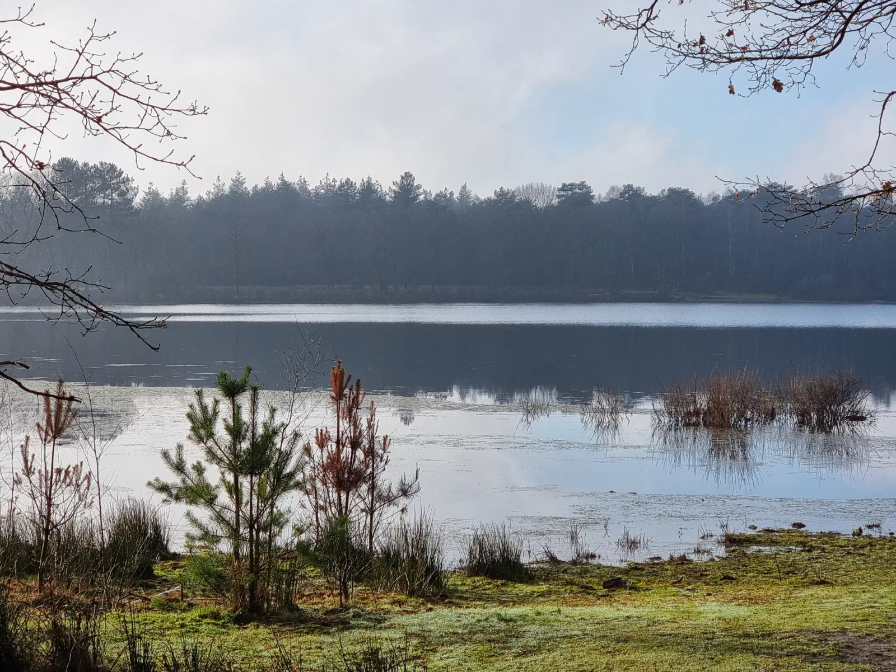
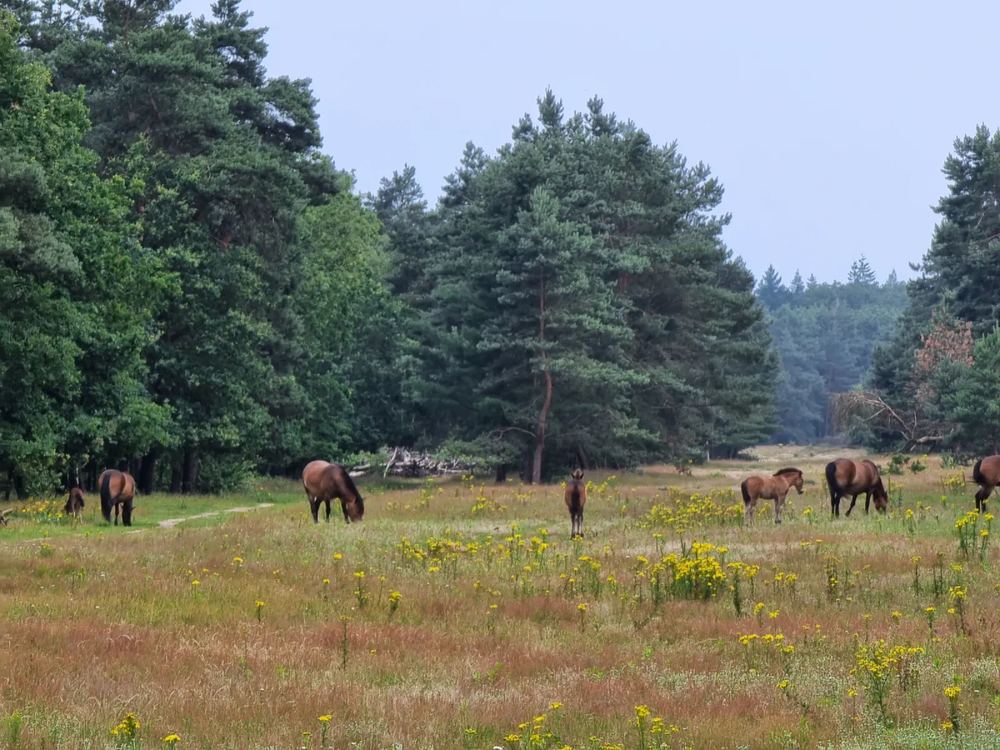
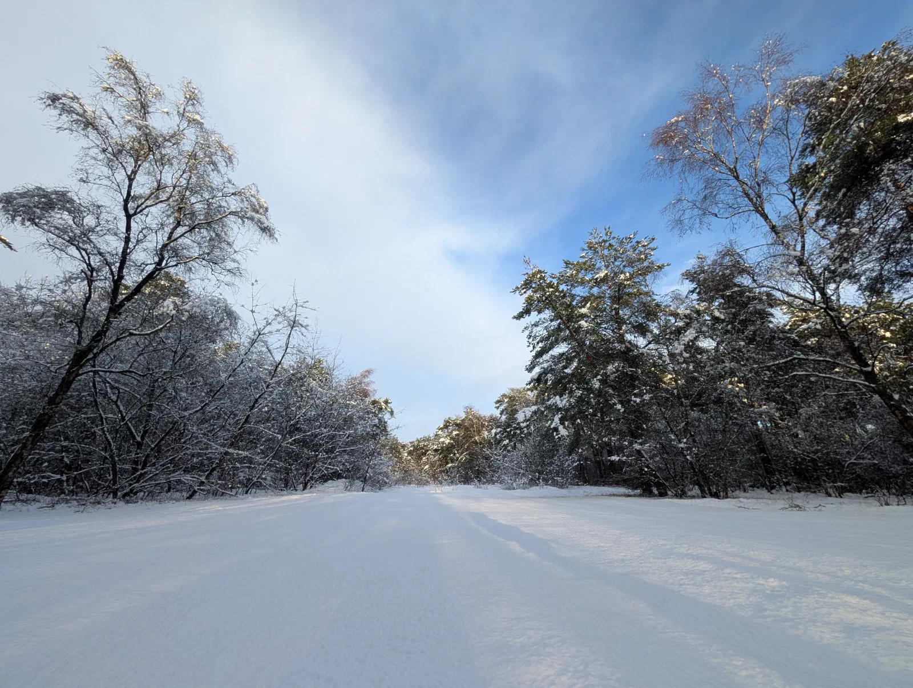

Natuurgebied Herperduin wordt ook wel de “Achtertuin” van Berghem genoemd. Herperduin maakt onderdeel uit van natuurgebied de Maashorst. Als gast bevindt u zich hier aan de rand van het grootste aaneengesloten natuurgebied van Noord-Brabant. Een uniek ‘oerlandschap’ waar de natuur nog echt de baas is en waar u de haast van alledag direct achter u laat zodra u de eerste stap in het landschap zet.

Wandelen en fietsen in alle rust
De omgeving van Berghem is een paradijs voor actievelingen die houden van stilte. Het landschap is verrassend afwisselend: het ene moment loopt u door dichte naaldbossen, het volgende moment kijkt u uit over uitgestrekte heidevelden, stuifduinen en spiegelgladde vennen.
- Eindeloze routes: Dankzij een fijnmazig netwerk van wandelpaden en fietsknooppunten stippelt u eenvoudig uw eigen route uit.
- Onverharde paden: Voor de echte natuurliefhebber zijn er talloze struinpaden waar u nog uren kunt dwalen zonder iemand tegen te komen.
Ontmoet de ‘Big Three’
Wat De Maashorst echt bijzonder maakt, is de aanwezigheid van de grote grazers. Tijdens uw tocht kunt u zomaar oog in oog komen te staan met een indrukwekkende Wisent, een krachtige Tauros of een sierlijke Exmoorpony. Deze dieren leven hier in alle vrijheid en zorgen ervoor dat het landschap open en gevarieerd blijft.
{kind=link}

{kind=link}

Wist u dat?
De Maashorst is niet alleen groot, maar ook een van de weinige plekken in Nederland waar de natuur nog echt haar eigen gang mag gaan.
Een plek om te onthaasten
De kracht van deze omgeving zit in de eenvoud: de zuivere boslucht, het gefluit van vogels en het ritselen van de wind door de bladeren. Of u nu kiest voor een sportieve fietstocht door de uitgestrekte natuur of een meditatieve ochtendwandeling bij opkomende mist; de omgeving van Berghem biedt de ruimte en de rust die we in het dagelijks leven vaak zo missen.
{kind=link}